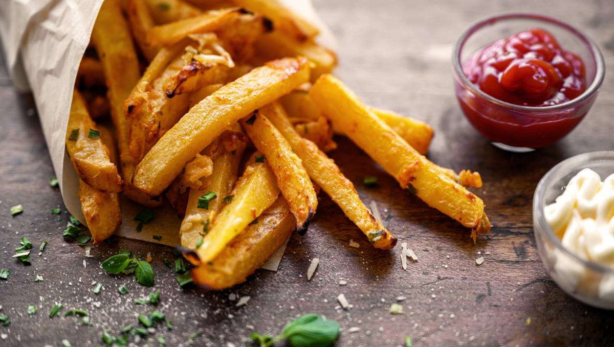

EJERCICIO 4

INGREDIENTES
3 o 4 papas de 300gr.
Aceite.
Sal.
ELABORACIÓN (PASOS)
Pelar las papas.
Cortarlas en bastones.
Calentar aceite en una sartén.
Cocinarlas hasta que estén doradas.
Removerlas del aceite y salar a gusto.